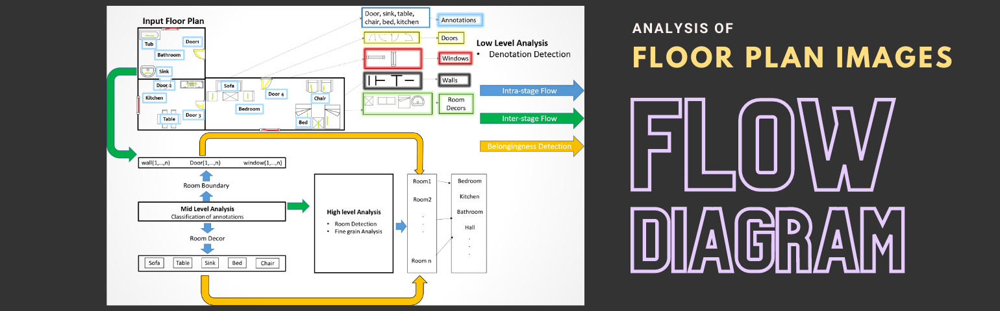

Graphical documents are human made instruments of communication that convey complex concepts using rich diagrammatic information.
Floor plans are one of the type of graphical document which shows the structural planning and visually model the structure of a building.
In architecture a floor plan is drawing to scale, showing a view from above of the relationship between rooms, spaces and other feature at one level of a structure.
Understanding a graphical document require three steps
Development of Multimodal Search Framework for Architectural Floor plan

Description: In ROBIN there are three categories of floor plans, depicting the three broad classes of houses. There are houses with 3, 4 and 5 rooms. The purpose and the subsequent label of each room varies depending on the various decors present in them. To be consistent with the existing floor plan datasets, the furniture symbols used in ROBIN dataset are similar to the ones used in SESYD dataset.
Description: BRIDGE (Building plan Repository for Image Description Generation, and Evaluation) dataset contains more than 13000 images of the floor plan and annotations collected from various websites, as well as publicly available floor plan images in the research domain. The images in BRIDGE also has annotations for symbols, region graphs, and paragraph descriptions. The BRIDGE dataset will be useful for symbol spotting, caption and description generation, scene graph synthesis, retrieval and many other tasks involving building plan parsing.